F001 · Quatrefoil brocade
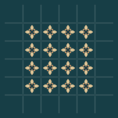
A four-petal flower, inner jewel and diagonal buds occupy each square pocket; straight spokes organise the curved masses.
Gojo · interior ornament
The mesh sets the rhythm; the spaces hold the ornament. Larger compound motifs grow from centre, edge and tangent guides, with colour choosing whether the filled interior or the surrounding lattice leads the design.
Construction guides provide centres, directions and landmarks. They need not remain visible or be followed literally by the finished ornament. The mesh-only and construction views show how each ornament is placed.

A four-petal flower, inner jewel and diagonal buds occupy each square pocket; straight spokes organise the curved masses.
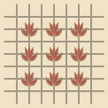
Large palmette compounds span a two-by-two twill repeat. Five ribs and side scrolls give the interior its own structure.
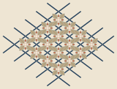
Separated, quieter diamond rosettes sit behind the indigo braid. The mesh is the foreground reading, with clear gaps between neighbouring leaves.
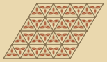
A three-lobed flower and its straight tripod are fitted to each triangular face. The opposite face reverses the compound.
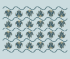
A five-rib palmette fills each inter-wave chamber. Paired tangent scrolls turn the quiet space into a second pattern.
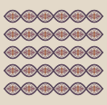
Horizontal lens fleurons have long petals, short cross petals, enclosing scrolls and a centre jewel.
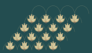
Lowered five-lobed fans fill every scallop row, including the top course, while leaving clearance beneath each arch.
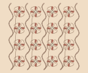
A centre blossom is held between two tangent scrolls, with edge-normal side buds. The scrolls are construction for a whole chamber.
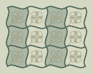
A four-part whorl combines straight radial guides, broad curling petals and an inner flower. Alternating chamber tones emphasise the negative spaces.
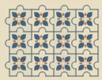
A diagonally oriented garden seal occupies the upper-left-biased interior focus, answering the tab and recess rather than the lattice centre.
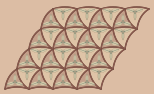
Curved trefoils alternate lower in the darker face phase and higher in the lighter phase. Their new staggered motif disposition remains connected to the original horizontal mesh landmarks.
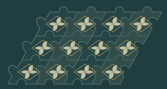
An oblique lozenge, four broad lobes and internal ribs occupy a left-biased cell focus. Even mesh outlines retain the flat ribbon reading.